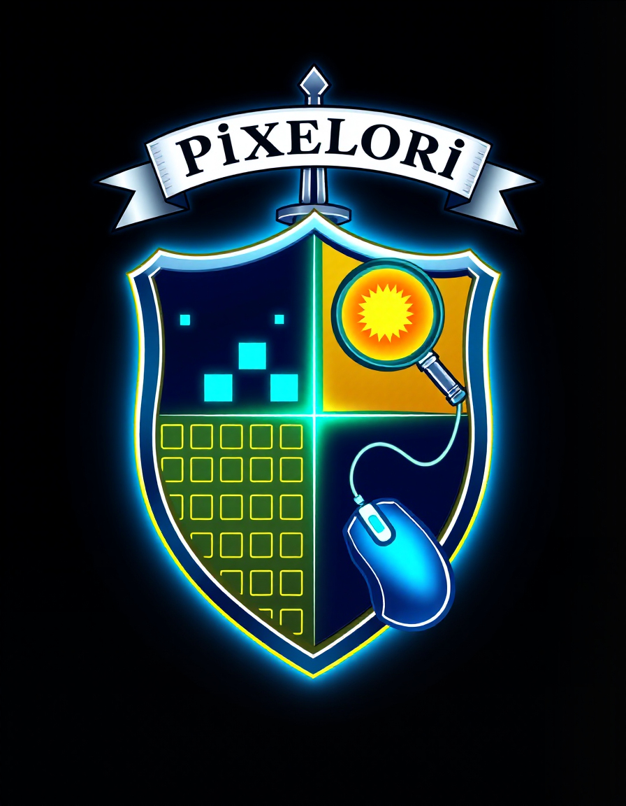
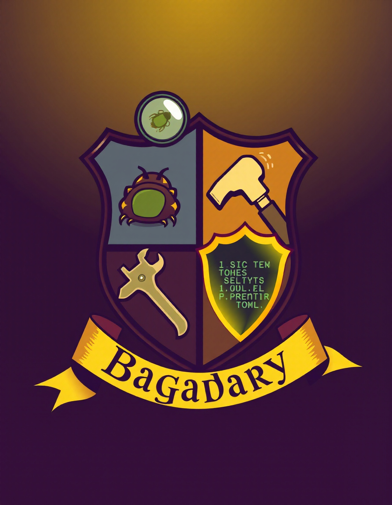
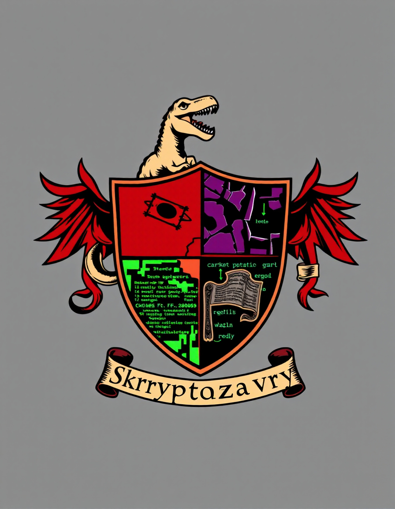
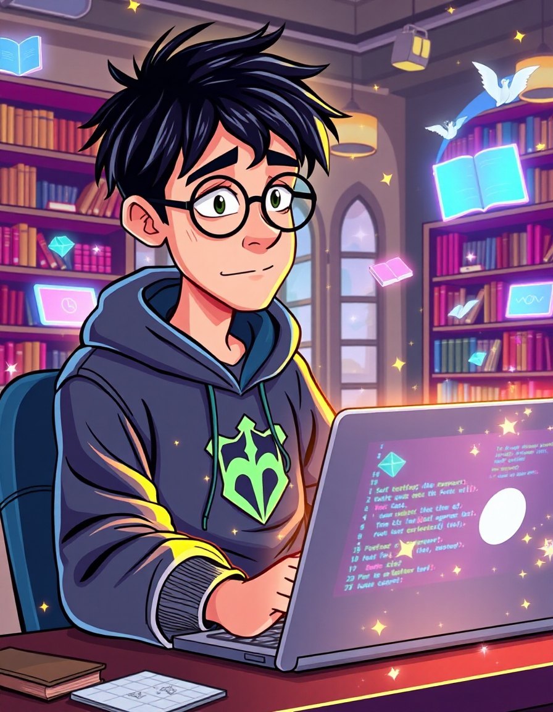
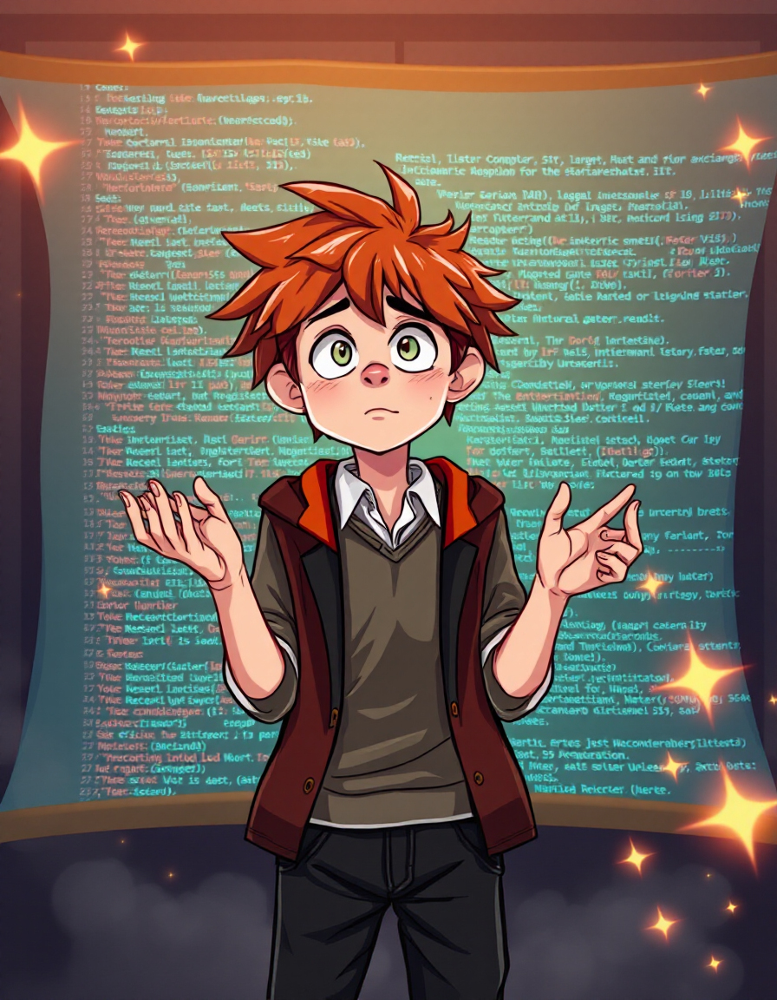
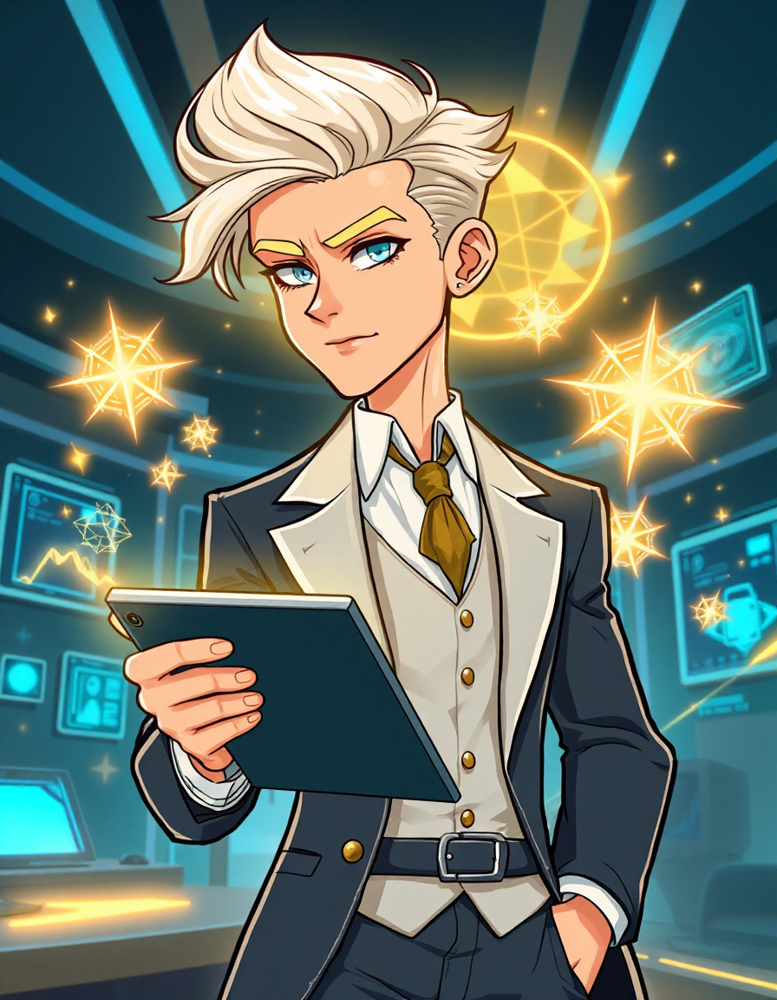
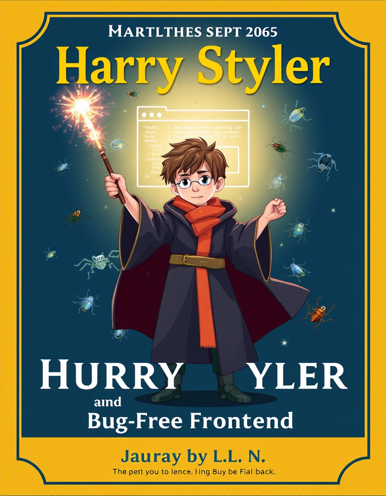
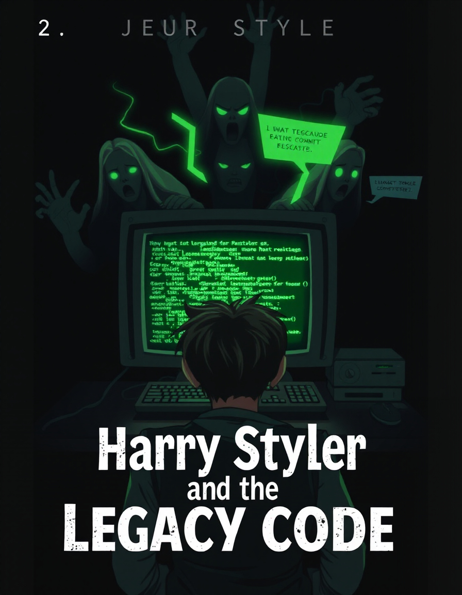
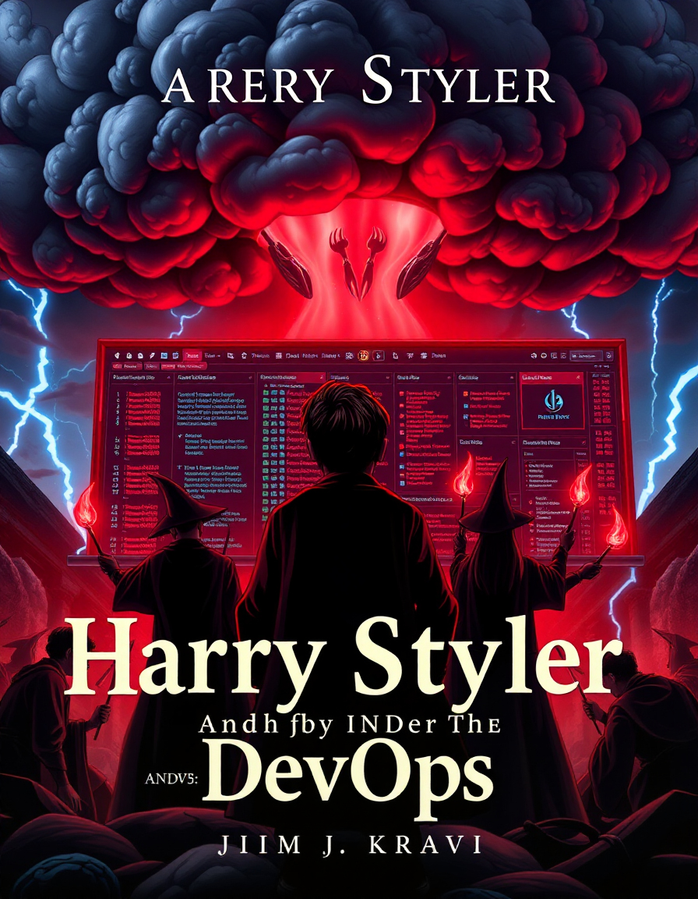
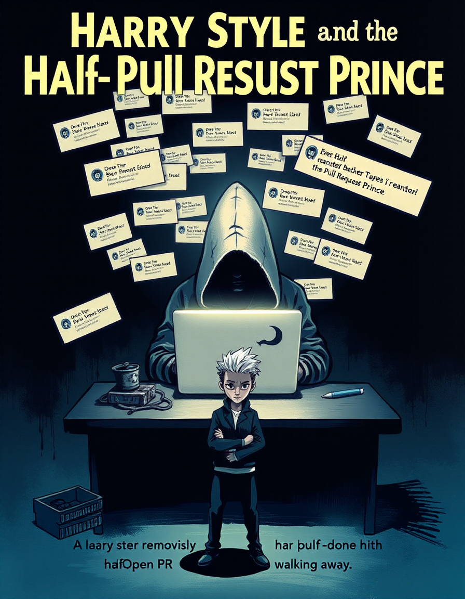

Harry Styler
Факультети Грідвартс
-

Pixelori - роблять Pixel Perfect, навіть якщо це біль. Не бояться макетів від дизайнерів зі 100500 варіантами шрифтів і тіней.
-
Flexusnyky - вивчають CSS Grid і Flexbox на філософському рівні, можуть зробити верстку без жодного div'а.
-

Bagadary - терпляче виправляють баги в IE11 і допомагають джунам з адаптивом.
-

Skrryptazavry - пишуть таку верстку, що вона ідеальна всюди… окрім одного браузера, де все руйнується без пояснення.
Головні герої
-
Гаррі Стайлер – Магічний верстальник-початківець
Гаррі, молодий маг у світі верстки, тільки почав своє навчання на магічному курсі.
Спочатку він намагався використовувати застарілі заклинання старих технологій, які були схожі на CSS Grid і Flexbox,
але його чаклунські заклинання часто призводили до неочікуваних результатів, і сторінки виглядали як магічний хаос.З часом він відкрив для себе потужний інструмент Sass – його справжній арсенал для збереження стилів в магічному порядку.
Гаррі освоїв змінні, міксини та вкладеність, і це дало йому змогу швидко створювати стильні та адаптивні дизайни без будь-яких
непередбачуваних заклинань. Тепер він може кастувати на сторінці елементи, які миттєво адаптуються до будь-яких розмірів,
і підтримує гармонію в світі верстки, де раніше панував хаос. -
Герміна Сассфорд – Майбутня Майстриня CSS
Герміна - справжня чарівниця у світі стилів. Вона розуміється на CSS так, як маги на своїх заклинаннях.
Володіє всіма властивостями, від flexbox до grid, і завжди знає, як розставити елементи на сторінці так, щоб все було на своєму місці.Її інтуїція підказує, як правильно налаштувати position, щоб нічого не виглядало «завислим»,
і як за допомогою Sass створити чистий і потужний код. Герміна може пояснити різницю між
relative та absolute так, що навіть новачки відчують себе справжніми магами верстки. -
Рон Лагер – Верстальник з багами
Рон — це той верстальник, у якого все ламається без причини. Він працює, і раптом елементи на сторінці починають
дивно себе вести: кнопки не натискаються, шрифти розтягуються, а зображення дивним чином зникають. Він переглядає
код і не розуміє, чому так відбувається. Кожного разу він запитує: "У вас теж все ламається?",
а колеги з дивацтвами сміються й відповідають: "Ні, у нас все в порядку!"Рон продовжує боротися з помилками, які ніби з’являються з нізвідки, і завжди знаходить
нові способи виправити їх, хоча часом здається, що навіть магія тут не допоможе. -
Драко Мудрений – Архітектор складних рішень
Драко — це той UX-дизайнер, чиї макети завжди виглядають як шедеври, але при цьому вони настільки складні,
що на практиці їх практично неможливо втілити. Він створює інтерфейси з елементами,
які порушують усі можливі правила верстки, а потім загадково запитує: "Просто спробуй".У кожному його проекті є мінімум одна "нездійсненна" ідея, яку навіть досвідчений розробник
не може втілити без магії. Драко не розуміє, чому інші не можуть зробити його макет ідеальним —
адже для нього це, здавалося б, просто, і він вважає, що вони просто не володіють необхідними навичками.
Кожен раз, коли команда верстальників намагається повторити його бачення, результат не схожий на його
оригінальний макет.І кожен раз він каже: "Просто спробуйте ще раз".
Чари фронтенду
-
"Displayus Flexus!" — і блоки магічним чином встають в ряд.
-
"Pixelus Perfectus!" — перевіряючий дизайнер не знаходить жодної помилки.
-
"Crossbrowserium Compatibilium!" — верстка ідеально виглядає у всіх браузерах (легенда каже, що такого ніхто не бачив) .
-
"Divium Reducium!" — код стає чистішим, кількість div зменшується.
-
"Mediaquarius Adaptivus!" — сайт стає адаптивним сам по собі.
-
"Faviconus Universalis!" — фавіконка з'являється на всіх пристроях, у всіх браузерах і навіть в старих версіях Інтернет Експлорера.
Всі книги про Гаррі Стайлера
-

Гаррі Стайлер і Фронтенд без багів
Магічний світ коду та верстки, де Гаррі Поттер намагається створити ідеальний фронтенд без жодної помилки. Але чи можливо це?
-

Гаррі Стайлер і Проклятий Legacy-код
Старий код, що лякає навіть найсміливіших розробників, повертається! Гаррі та його друзі стикаються зі справжнім жахом: проєктом, написаним десятки років тому без жодної документації. Чи вдасться їм розв’язати прокляття?
-
Гаррі Стайлер і Таємна Документація
Ходять легенди про повну документацію до цього проєкту... Гаррі та команда вирушають у небезпечну експедицію по серверних нетрях, щоб знайти її. Чи справді вона існує, чи це черговий міф?
-

Гаррі Стайлер і Орден DevOps
Коли здається, що весь код зібраний, а деплой має пройти гладко, завжди щось ламається. Орден DevOps бореться за стабільний CI/CD, але темні сили продакшену перешкоджають їм.
-

Гаррі Стайлер і Принц Полуреквеста
У чарівному королівстві GitHub з’являється таємничий розробник, який відкриває PR, але ніколи його не доводить до кінця... Гаррі намагається зрозуміти його мотиви та врятувати команду від нескінченних код-рев’ю.
Друге завдання
Maecenas lacinia felis nec placerat sollicitudin. Quisque placerat dolor at scelerisque imperdiet. Phasellus tristique felis dolor.
Maecenas elementum in risus sed condimentum. Duis convallis ante ac tempus maximus. Fusce malesuada sed velit ut dictum. Morbi faucibus vitae orci at euismod. Integer auctor augue in erat vehicula, quis fermentum ex finibus.
Mauris pretium elit a dui pulvinar, in ornare sapien euismod. Nullam interdum nisl ante, id feugiat quam euismod commodo. Sed ultrices lectus ut iaculis rhoncus. Aenean non dignissim justo, at fermentum turpis. Sed molestie, ligula ut molestie ultrices, tellus ligula viverra neque, malesuada consectetur diam sapien volutpat risus. Quisque eget tortor lobortis, facilisis metus eu, elementum est. Nunc sit amet erat quis ex convallis suscipit. ur ridiculus mus.